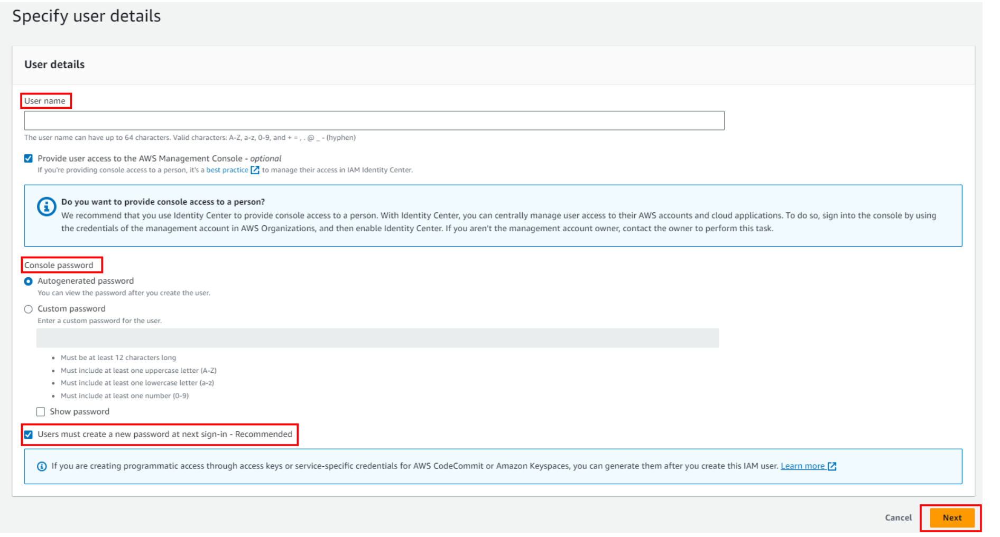
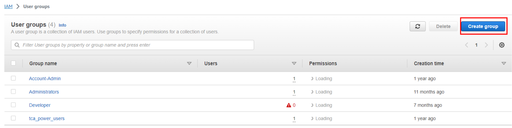

Unlocking the Magic of AWS: Exploring Identity and Access Management (IAM)

Introduction:
Welcome to our blog where we’re going to talk about something really awesome that keeps our Amazon Web Services (AWS) stuff safe and organised. Imagine you have a super cool clubhouse in the cloud, filled with different rooms of gadgets and fun things. But you want only the right friends to come in and play with specific toys. That’s exactly what Identity and Access Management also known as IAM does for your AWS clubhouse – it’s like the superhero who makes sure the right buddies have the right keys!
In this exciting adventure, we have three main characters: IAM users, roles, and policies. IAM users are like buddies who want to use your AWS toys. Roles are like special hats that buddies wear when they need to do something special, like being a superhero for a day. Policies are like the rules that IAM uses to decide who can join the party and what they can do.
So, get ready to explore the world of IAM in AWS with us. We’ll show you what IAM users, roles, and policies are, why they’re super important, and how they work together to keep everything safe and fun in your AWS playground. Let’s dive in and learn about IAM – the guardian of your AWS adventures!
AWS Identity and Access Management (IAM)
AWS Identity and Access Management (IAM) is like a security guard for AWS services. It controls who can use what and how within AWS.
Imagine IAM as having two main roles:
- Proving Who You Are (Authentication):
This is similar to showing an ID before entering. When you want to use AWS, you have to confirm your identity. Usually, you do this with a username and password. Sometimes, you might need an extra step, like entering a code from your phone.
- Deciding What’s Allowed (Authorization):
Simply getting inside doesn’t mean you can do everything. Some parts might be restricted or have specific rules. Once you prove your identity, IAM ensures you only have access to what you’re supposed to. It’s like getting a special badge that lets you into specific areas.
AWS Identity and Access Management (IAM)
AWS Identity and Access Management (IAM) is like a security guard for AWS services. It controls who can use what and how within AWS.
Imagine IAM as having two main roles:
- Proving Who You Are (Authentication):
This is similar to showing an ID before entering. When you want to use AWS, you have to confirm your identity. Usually, you do this with a username and password. Sometimes, you might need an extra step, like entering a code from your phone.
- Deciding What’s Allowed (Authorization):
Simply getting inside doesn’t mean you can do everything. Some parts might be restricted or have specific rules. Once you prove your identity, IAM ensures you only have access to what you’re supposed to. It’s like getting a special badge that lets you into specific areas.
Now, let's delve into the three main IAM identities:
- Users: AWS IAM allows you to create individual user accounts associated with your AWS account. Each user has a unique set of security credentials and specific permissions. Users are used to authenticate and interact with AWS services.
- Groups: Instead of assigning permissions to individual users, you can organize users into groups and then assign permissions to the groups. This makes it easier to manage permissions for multiple users who require similar access.
- Roles: IAM roles are similar to users, but they are not associated with a specific person. Roles are meant to be assumed by entities such as AWS services, applications, or users from other AWS accounts. Roles define a set of permissions, and users or resources can assume these roles temporarily.
IAM ensures that the right people use the right things in the right way in AWS by managing these identities effectively.
AWS Identity and Access Management (IAM)
AWS Identity and Access Management (IAM) is like a security guard for AWS services. It controls who can use what and how within AWS.
Imagine IAM as having two main roles:
- Proving Who You Are (Authentication):
This is similar to showing an ID before entering. When you want to use AWS, you have to confirm your identity. Usually, you do this with a username and password. Sometimes, you might need an extra step, like entering a code from your phone.
- Deciding What’s Allowed (Authorization):
Simply getting inside doesn’t mean you can do everything. Some parts might be restricted or have specific rules. Once you prove your identity, IAM ensures you only have access to what you’re supposed to. It’s like getting a special badge that lets you into specific areas.
Now, let's explore key IAM identities:
- Root User: When you first make an Amazon Web Services (AWS) account, you start with one main sign-in identity. This identity has full access to all AWS services and resources in the account. It’s known as the AWS account root user, and you log in using the email and password you used to create the account.
- IAM Users: An IAM user is like a character you create in the AWS world. This character stands for a person or service that interacts with AWS using this identity. IAM users are mainly used to let people log in to the AWS Management Console for hands-on tasks and to make computerized requests to AWS services through APIs or the command-line interface (CLI). An IAM user has permanent, long-lasting credentials and is directly used to talk to AWS services.
Hands On: Creating an IAM User
To create a user, follow these steps:
- Navigate to the IAM dashboard:
Click on user , then click on create user as shown in below image.
Now we have to give a username. If you want to grant this user console access, then select the checkbox. After that, create a password for this user. You have two options for the password:
- Automatically generate a password by selecting the first option.
- Customize the password by selecting the second option, as shown in the image.
Once you've made your choices, click on the next button.
Then, you can see three options:
- Add User to Group: This option involves adding a user account to an existing group. Groups are typically organized based on job function or roles, making it easier to manage permissions for multiple users who share similar responsibilities. By adding a user to a group, they inherit the permissions associated with that group.
- Copy Permissions: This involves duplicating the permissions settings of an existing user, including all group memberships, attached managed policies (predefined policies provided by the system), and inline policies (custom policies attached directly to the user). This can be useful when you want to replicate a user’s access for a new user with similar responsibilities.
- Attach Policies Directly: Instead of adding policies directly to a user, it’s often considered a best practice to attach policies to a group. This centralizes policy management and makes it easier to update permissions for multiple users at once. Then, you add users to the appropriate groups to grant them the required access.
The last step is to review the data you have provided and finally click on Create User.
The last step is to download a CSV file, which will include a username and password to log in to the account. Congratulations, you have created your first IAM user in the AWS account.
Groups
Understanding IAM Group
An IAM user group is a collection of IAM users, organized to facilitate the management of permissions for a group of users. Think of it as categorizing users into specific groups, making it easier to handle and define permissions.
Example:
In the real world, different teams have distinct roles and responsibilities. They should only have access to the resources and actions they require.
Instead of individually setting permissions for each person, groups with predefined permissions can be created. In AWS IAM, consider groups as teams of users. For instance, creating groups like "Admins" or "Security Auditors" allows for the assignment of appropriate permissions to those teams.
By using groups, access management becomes more straightforward. AWS recommends using groups to organize access, making it easier to modify team permissions. If you need to change what a team can do, you only need to adjust the group settings.
Furthermore, users can be added or removed from groups, simplifying the management process. For instance, if someone switches teams, you only need to place them in a different group, eliminating the need to redo all their permissions.
Hands-On:
Access "Groups" Section: In the left navigation pane, click on "Groups."
Create a New Group: On the Groups page, click the “Create New Group” button.
Group Details:Enter a name for the group that describes its purpose or role (e.g., “Developers” or “Admins”).
Attach Policies: In the next step, you can attach policies to the group. These policies define the permissions the group members will have. You can search for and select managed policies (predefined policies provided by AWS) or attach custom policies. Select the policies that match the permissions required for the group.
Review and Create: Review the group details and attached policies. If everything looks correct, click the "Create Group" button.
Group Created: Once the group is created, you’ll see a confirmation message. You can then find the group listed on the “Groups” page.
Add Users to the Group: With the group created, you can now add users to the group. Click on the group’s name, and then click the “Add Users to Group” button. Select the users you want to add and proceed.
Users Inherited Permissions: The users added to the group will inherit the permissions granted by the group’s attached policies.
Congratulations, we have created our first IAM user group in the AWS account.
Roles:
Understanding IAM Role: An IAM role is similar to a user, serving as an identity with defined rules for actions within AWS. However, a role doesn’t have its own long-term credentials like passwords or access keys. Instead, when you “take on” a role, you receive temporary security credentials for your role’s session. Roles are not restricted to individuals; they are designed to be utilized by anyone or any service requiring specific permissions (IAM users, applications, or AWS services like EC2).
Use Roles to Share Permissions
Never put secret keys in code or on servers.
When writing code, it’s tempting to hide keys in the code itself (or in places like environment variables), but this can be risky. Even if the keys are hidden, hackers might find them. The safer way is to use IAM roles and get temporary security credentials.
You can “become” an IAM role using AWS Security Token Service (STS) or switch to a role in the AWS Management Console to get temporary access. This is more secure than using your long-term password or keys. Temporary access only lasts for a short time, which lowers the risk if your credentials get stolen.
For IAM users, make separate roles for different tasks and use those roles for those tasks. Don’t use your main IAM admin user for everyday stuff.
Roles for Apps on EC2 Instances
Apps on AWS EC2 instances need permission to use other AWS services. For example, if you have an app on an EC2 instance that needs to save things in an S3 bucket.
You could make an IAM user with keys and give those to instances. But the problem is giving keys to each instance safely, especially when AWS makes instances for you (like Spot Instances or Auto Scaling groups). You also have to update keys on each instance when you change your AWS keys.
To make apps safer, use IAM roles.
Remember: a role is like a set of rules for what’s allowed, but it’s not a user. Roles don’t have permanent keys like IAM users do. With Amazon EC2, IAM gives the instance a temporary set of keys, and these keys change automatically.
Details: Amazon EC2 uses an “instance profile” as a place for an IAM role. When you make a role with the IAM console, it makes an instance profile too. They have the same name. If you use the Amazon EC2 console to start an instance with a role or attach a role to an instance, you pick the role from a list of instance profile names. This way, apps on the EC2 instance can use the role’s keys when they talk to AWS stuff.
Hands-On:
Access “Roles” Section: In the left navigation pane, click on “Roles.”
Create a New Role: On the Roles page, click the “Create role” button.
Select Type of Trusted Entity: Choose the service that will use this role. This is known as the “trusted entity” that assumes the role. For example, if you want to allow an EC2 instance to access other AWS services, select “AWS service” and then choose the service that will assume the role.
Choose Use Case: Depending on the use case, you’ll select a use case that best matches your scenario. For example, if you’re granting permissions to an EC2 instance, select “EC2” from the list.
Permissions: Attach policies to the role that define the permissions the role will have. You can search for and select managed policies or attach custom policies.
Role Name: Enter a name for the role that describes its purpose or function (e.g., “EC2S3AccessRole”).
Review and Create: Review the role’s settings, attached policies, and trusted entities. If everything looks correct, click the “Create role” button.
Role Created: Once the role is created, you’ll see a confirmation message. You can then find the role listed on the “Roles” page.
Congratulations, we have created our first IAM Role in the AWS account.
IAM Policies
What are IAM Policies?
In AWS, controlling access is done through policies that you create and link to IAM identities (like users, groups, or roles) or AWS resources. A policy is like a tool in AWS that, when connected to an identity or resource, lays out what they’re allowed to do. The permissions stated in these policies decide if a request should be accepted or rejected.
These policies are usually saved as JSON files within AWS.
Use Ready-Made Policies from AWS
If you’re new to AWS and find it tricky to create and manage your own rules for different users and teams, you’re in luck. AWS has pre-made policies that you can use. These policies are like templates for common tasks. No matter if you’re setting up stuff or working with data, there’s likely a policy for you. Using these saves time and they even update when new stuff is added by AWS. But be careful: these policies might give more access than needed, so be cautious.
Hands-On:
Access “Policies” Section: In the left navigation pane, click on “Policies.”
Create Policy: On the Policies page, click the “Create policy” button.
Choose a Policy Type:
You can either create your own policy from scratch using the JSON editor (select “JSON”) or use the visual policy editor (select “Visual editor”). For simplicity, let’s choose the “Visual editor” option. In the visual editor, you can search for and select individual actions and resources, or you can attach existing managed policies. This defines what actions are allowed or denied for resources.
Now allow the actions on resources for service you have selected in earlier steps.
Review Policy:
Review the permissions and resources you’ve added to the policy. Ensure they match your intended access requirements.
Specify Policy Details:
Give the policy a name and optional description to help identify its purpose (e.g., “S3ReadPolicy”).
Review and Create:
Review the policy details. If everything looks correct, click the “Create policy” button. Once the policy is created, you’ll see a confirmation message. You can then find the policy listed on the “Policies” page.
Congratulations, we have created our first IAM Policy in the AWS account.
Best Practices
Avoid Using the Root User
Companies might create one main AWS account with powerful root credentials and then make many other users and roles with different credentials. However, the root account should always be the most protected in an AWS setup.
Never use your AWS root account’s special key to make requests to AWS. This key gives unlimited access to all your stuff across AWS services. You can’t limit its permissions. So, treat your root account’s special key like super-secret info. Just as you’d protect your credit card details, keep the root key safe. Here’s how:
- Don’t use the root user for normal tasks, even important ones. Only use the root account to make your main IAM admin user. After that, lock the root user away safely.
- For everyday tasks, don’t even use your IAM admin user. Use roles to share permissions.
- Delete the root user’s special key. Or if you must keep it (but you don’t really need to), change the key regularly.
Add Extra Security with Multi-Factor Authentication (MFA)
MFA adds a second safety step based on something you have, like a special device. It’s a great idea to turn on MFA for all users in your AWS account. With MFA, even if someone gets your password or keys, they can’t get into your stuff without that extra thing (like a code from a device).
Use Strong Password Rules
If you let users change their own passwords, set rules that make them create strong passwords, and switch them up sometimes. You can make IAM admins set rules that need users to have strong passwords and change them regularly. Strong passwords are harder to guess, making your cloud stuff safer.
Choose IAM Roles Over Long-Term Keys
Keys give long-lasting access to AWS. If they’re stolen, it’s like giving away your account password. For most apps that need AWS access, it’s better to make them use a special role to get temporary access. Also, don’t leave keys in plain code. Use secrets instead. Don’t share these secrets between users. Each user should have their own keys.
Keep Changing Credentials
If someone steals your password or keys without you knowing, they can use them forever. Change them regularly to cut that risk. If you make all your users change their passwords often, even if a credential is stolen, it’s only useful for a short time.
Get Rid of Old, Unneeded Credentials
If you made a user just for a job that doesn’t use the console, that user doesn’t need a password. If a user only uses the console, take away their keys. Also, find and delete unused passwords and keys to boost security. You can do this using the console, command line, or API, or by checking a credentials report.
Customer-Made Policies Are Safer
While the pre-made policies are handy, they don’t always follow the safest route. To be super safe, create your own policies. These should only give the exact permissions your team needs. But, this needs more effort. You also need a way for your team to ask for more permissions if needed.
Usually, it’s better to use customer-made policies over inline ones (policies attached directly to users or groups). Customer-made policies can be used for many users, have better change control, versioning, and let you share permissions control.
More Security: Set Conditions
Security needs context. You can add conditions to your policies, like allowing access only from specific places or needing an MFA device. But don’t make it too complicated.
Check and Validate Policies
Check your policies to make sure they’re correct and logical. Most text editors can do this easily. For even better policies, use tools like IAM Access Analyzer to check for security risks and get suggestions for safer policies.
Create Policies Based on Activity
This is smart: If you’re not sure what’s used where, but want to keep things safe, you can generate policies based on what’s been used before. Using your AWS CloudTrail logs, tools can make policy templates that show exactly what’s needed. Attach these to users or roles, and you’re good to go.
Review and Fine-Tune Access Levels
Keep checking your policies to make sure they’re safe. Policies are categorized based on what they let you do: list, read, write, manage permissions, or add tags. Make sure to use the right level for each task.
Conclusion
Overall, IAM is like a superhero for AWS security. It helps you manage who can do what in your AWS world. By using user groups, roles, and policies, you can control access in a smart way.
Remember, it’s important to be careful with access keys and passwords. Instead of giving too much power to one person, it’s better to use roles and groups to share permissions. And always make sure to use strong passwords and change them sometimes.
IAM makes AWS safer and organized. Following these tips will help you build a strong shield of security for your AWS resources.
Share this post: